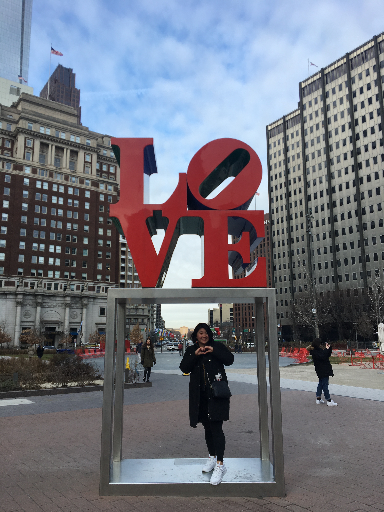
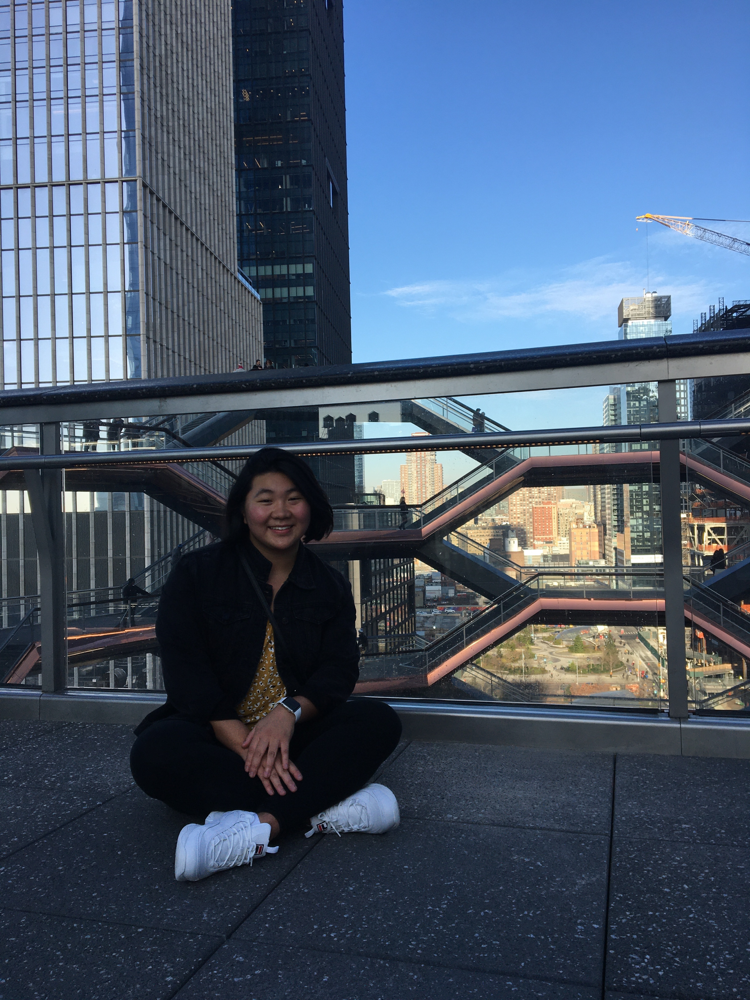
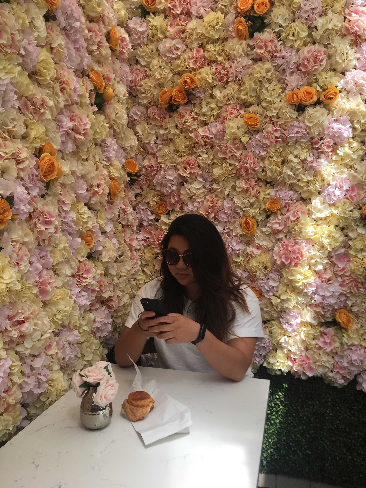
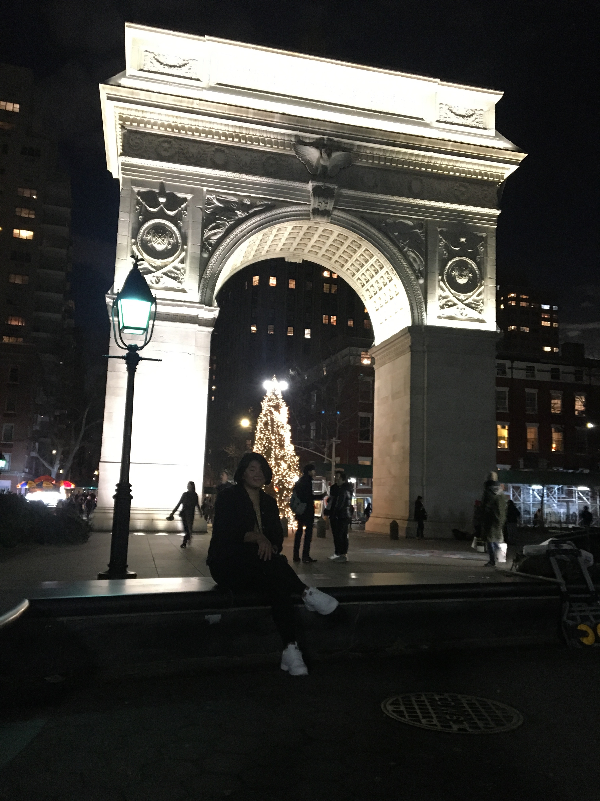
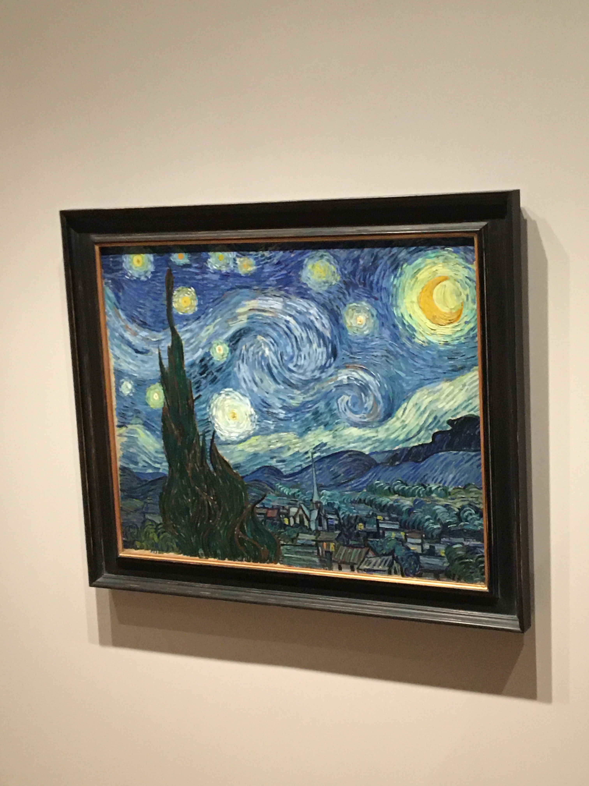
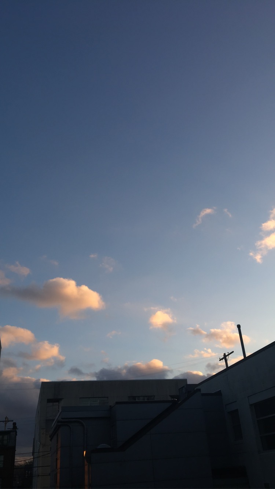

| Event | Description | |
|---|---|---|
| Reading Terminal Market + Love Statue |  | Ate cheesteaks, and got coffee for the road. Went to the LOVE statue, and explored parts of Phili. |
| The Vessel |  | Went to the vessel, walked up the steps that was super scary, took pictures and got pictures of myself on the vessel. Lost my earring on it though, which is sad. |
| Food Tour |  | Went to Juniors Bakery, Best Bagels and Dominique Ansel Bakery! |
| Washington Sq. Park |  | Walked around the park in the dark and enjoyed the cool air with my friends. |
| MoMa |  | Went to MoMa for free Uniqlo Friday tickets. The paintings were very... interesting. |
| Driving home through the Night |  | It was a long but fun car ride back home. We even saw the sun come up! |